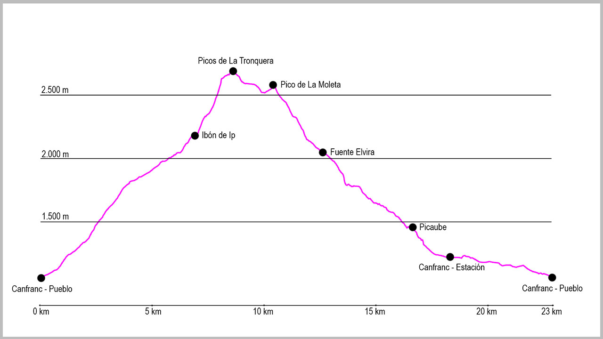

Tomaremos la salida de la ruta en el puente de arriba de Canfranc-Pueblo. Aquí cogeremos la pista que sale del aparcamiento y la seguiremos de manera ascendente, obviando un primer cruce a nuestra derecha y un segundo a nuestra izquierda, hasta que pasemos el puente sobre el barranco de Ip y finalice. Aquí cogeremos el camino que nos conducirá hasta el Ibón de Ip.
El sendero balizado transcurre por una antigua “tiradera” de leña, aunque siempre podemos coger el antiguo camino que nos subirá más cómodamente haciendo varias “zetas”. Poco a poco vamos cogiendo altura por dentro del bosque, donde cruzaremos varias canales de aludes de nieve, pero sin ninguna dificultad.
Cuando llegamos al final del bosque y ya podamos ver todo el circo de Ip, cruzaremos la canal del Obispo, para entonces continuar ya nuestro camino con casi todo el desnivel ganado anteriormente. Pasaremos desde este punto una antigua paridera para el ganado e iremos entrando en el valle.
Justo antes de llegar al Ibón el sendero pasa a la izquierda de un edificio blanco. Nosotros seguiremos rectos y por la derecha del edificio para llegar a una antigua pista. La cogeremos girando a nuestra izquierda y seguiremos en todo el rato en dirección este. En esta pista llegaremos a un cruce donde giraremos en dirección norte a nuestra izquierda y desde donde ya veremos la subida que viene a continuación. El collado de la Pala de Ip será nuestro objetivo y sin un claro camino hasta él, deberemos de mirarlo todo el rato.
Desde una torre de equilibrio que veremos poco después del cruce, empezaremos a subir por una zona de hierba en dirección noreste. Al poco rato llegaremos a un pequeño vallecillo que atravesaremos, y que después seguiremos en la misma dirección.
Sin pasar en ningún momento el barranco que viene del collado, seguiremos ascendiendo cada vez más en más dirección norte. Enseguida llegaremos a una zona de más piedras y desde aquí el collado ya está cerca. A partir de esta zona tendremos que aumentar la precaución, pero cada vez más hitos nos acompañarán en la subida. Justo antes de llegar al collado, en algún tramo tendremos que echar la mano para ayudarnos. Al llegar al collado y dar vistas al valle de Izas giraremos a la izquierda para afrontar la cresta que nos llevará hasta la Moleta.
Desde este momento, la divisoria será nuestra guía. Justo antes de hacer cima en la Tronquera tendremos dos pasos donde habrá que echar la mano y extrema la precaución, pero una vez pasados, será un sube-baja continuo hasta llegar a la base de la Moleta. Aquí la bordearemos por la vertiente sur y subiremos hasta la cima por la primera chimenea que veremos a nuestra derecha, para hacer cima a 2.572 metros.
Una vez en la cima empieza el descenso. Desde la propia cima cogeremos dirección norte para situarnos en el balcón del pico y buscar unos hitos que nos llevarán a un paso estrecho. Nada más pasarlo el camino empieza a estar más marcado y enseguida nos llevará hasta el collado de la Moleta. Aquí seguiremos en la dirección que llevamos hacia el norte y así llegar hasta el barranco de Epifanio. Cuando entremos en la olla superior, deberemos girar un poco hacia la izquierda para localizar el centro del barranco en el fondo, y bajar por la cuenca entre diques. Esta bajada no tiene marcado ningún sendero, solo algún hito nos irá guiando.
Si mantenemos siempre una dirección noroeste y descendente, llegaremos rápidamente a cruzarnos con el sendero que recorre toda esta ladera. Justo cuando lleguemos a él, si nos salimos del camino unos 100 metros y ascendemos a nuestra izquierda, llegaremos a Fuente Elvira, donde podremos coger agua. Volviendo a donde hemos llegado al camino, giraremos a la derecha y cogeremos este camino muy cómodo que nos hará descender cómodamente hasta Canfranc.
En menos de 2 kilómetros llegaremos a la caseta del vasco, donde tras pasarla tomaremos un sendero a nuestra derecha en la bifurcación, que nos llevará en dirección norte a atravesar el barranco de Cargates. Justo después de pasarlo comienza una zona algo expuesta que nos hará mantener altura y atravesar toda la ladera hasta llegar al barranco de Picaube, donde el camino ya empieza a descender de nuevo.
Justo antes de llegar a la pista de Picaube llegaremos a una intersección de caminos que tomaremos a nuestra derecha, para a continuación salir en poco más de 50 metros a la pista forestal. Aquí tomaremos la pista de forma ascendente y llegaremos hasta la pradera de Picaube. La atravesaremos y justo al fondo sale un camino que nos llevará hasta la pista de Coll de Ladrones, llamado “camino difícil”. Este tramo del descenso es el más técnico. Varias cadenas nos ayudaran a descender una zona muy inclinada.
Una vez en la pista, la atravesaremos y bajaremos por otra pedrera para al acabar llegar a otra pista abandonada donde giraremos a la izquierda. Este giro dará paso a una zona más cómoda, y justo cuando lleguemos a la pista de nuevo cogeremos el camino que sale a la derecha para llegar hasta la antesala de Canfranc.
Justo a la llegada de nuevo a la pista de Coll de Ladrones cogeremos esta en sentido ascendente para seguirla durante unos 200 metros, donde cogeremos el cruce que sale a nuestra derecha al paseo de Los Melancólicos. Seguiremos este tramo para llegar al final a una rampa muy empinada y obviar un cruce que hay a nuestra izquierda para seguir por el ancho paseo. Poco después saldremos a la pista de Picaube, para cogerla de forma descendente y llegar al a carretera. Una vez en ella giraremos a nuestra izquierda y cogeremos el arcén derecho de la carretera (nuestra izquierda) para seguirlo durante casi un kilómetro por el borde de la presa de la central hidroeléctrica de Ip. En este punto llegaremos a un pequeño túnel, que atravesaremos y en su salida giraremos a nuestra izquierda para empezar a bajar por unas escaleras que nos conducirán a la base de la presa. Cruzaremos ahora el río Aragón por un puente y tras girar a la derecha al pasarlo seguiremos el camino durante varios kilómetros.
Atravesaremos varias zonas de bosque y tras varios sube-baja llegaremos al barranco de Ip. Este también lo pasaremos por un pequeño puente y continuaremos dirección sur. Apenas 500 metros después del barranco llegaremos a una pista donde giraremos a nuestra derecha para empezar la última bajada que nos conducirá hasta Canfranc-Pueblo.
